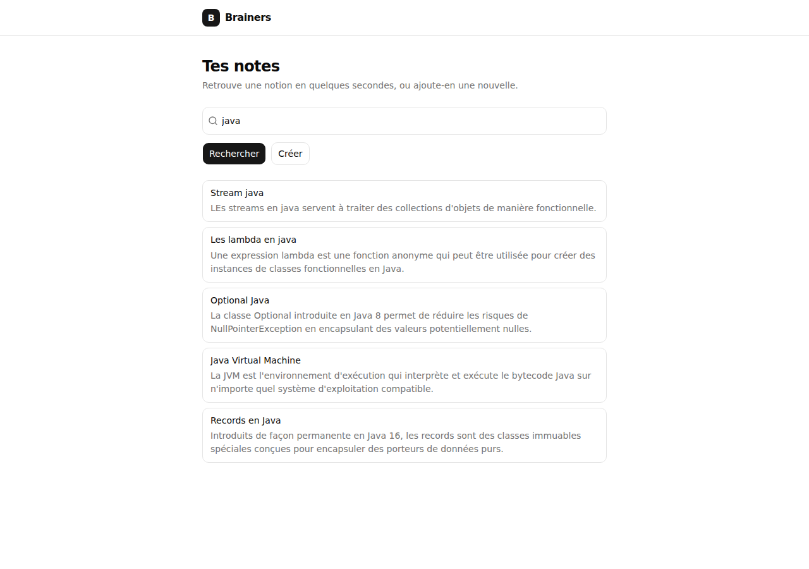
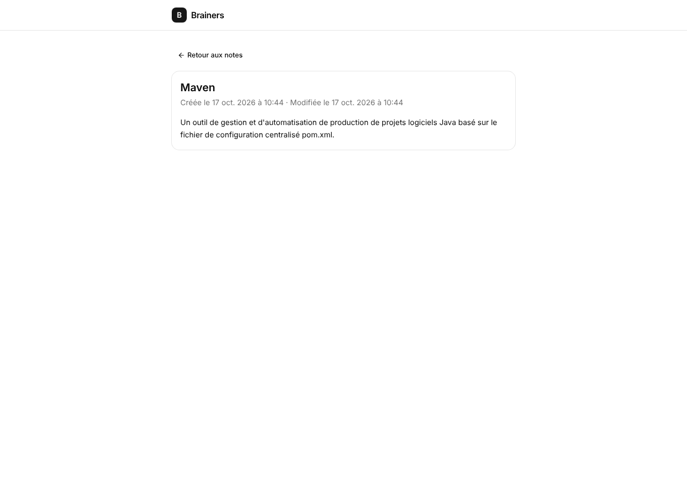
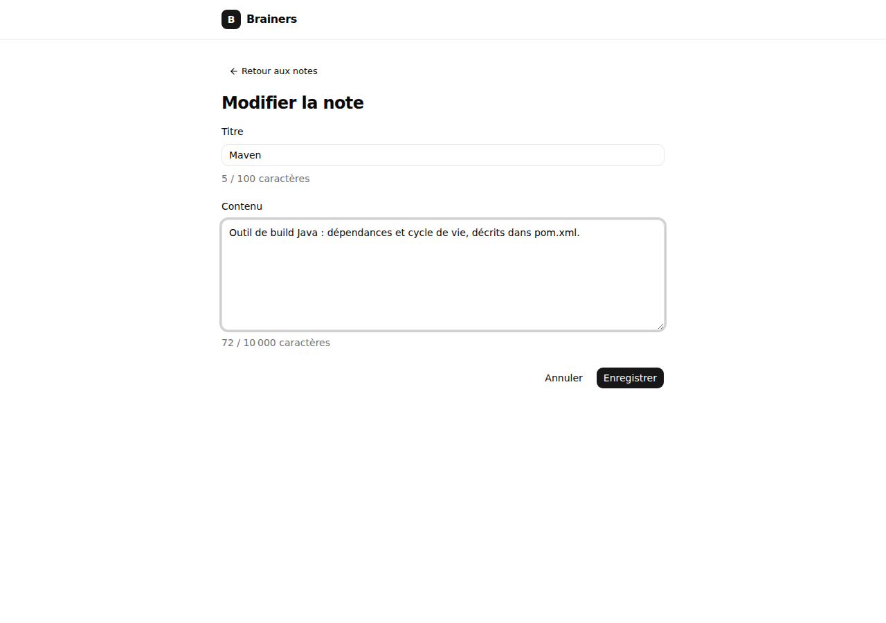
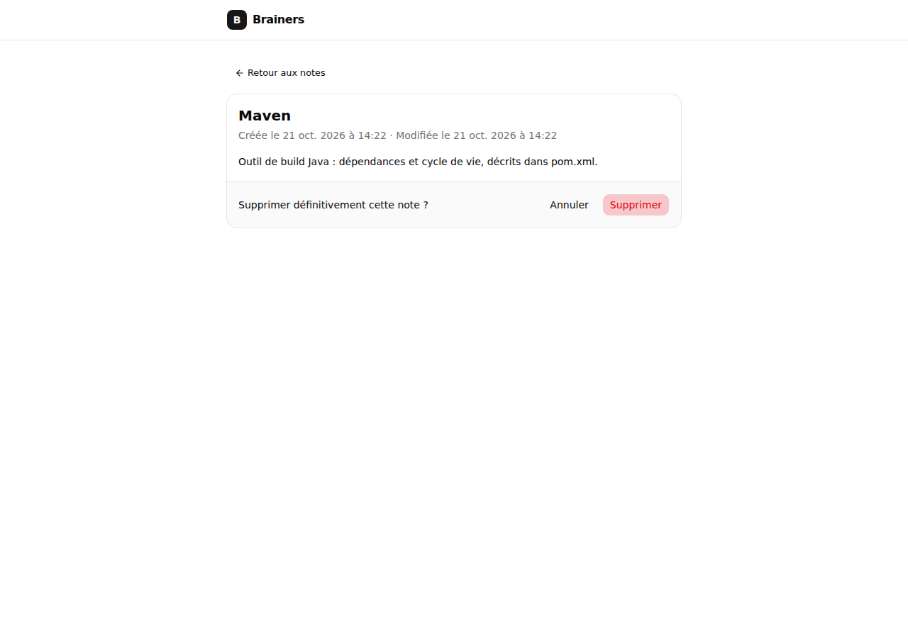

Cours pratique · dossier front/ du repo brainersfront
Angular avec Brainers
Tu sais développer, tu n'as jamais touché à Angular. Ce cours part de l'application que tu as sous les yeux et explique chaque idée d'Angular à travers son vrai code : ce que fait Brainers, comment le projet est rangé, où vit la logique métier, et comment le HTML et le CSS s'y accrochent.
/Accueil : rechercher→/notes/newCréer une note·/notes/:idLire, modifier, supprimer
Comment lire ce cours. Ouvre le dossier front/ dans VS Code à côté de cette page. Chaque extrait de code indique son fichier : va le lire en entier, le code est commenté.
Les chapitres suivent l'ordre dans lequel les notions s'appuient les unes sur les autres. Le chapitre 14 rejoue trois clics étape par étape, et le chapitre 18 te fait coder.
Chapitre 1
Ce que fait Brainers
Avant le code, le métier. Une note a un titre (« Maven ») et un contenu (« Un outil de build… »). On la retrouve par son titre, on la lit, on la corrige, on la supprime.
Le front Angular ne stocke rien. Il affiche des écrans et envoie des requêtes HTTP. Les notes vivent dans le back Spring (repo brainers, dossier demo/), qui les garde dans une base H2 en mémoire. Au démarrage, le back crée 20 notes de démo.

Accueil, /. Une barre, « Rechercher » et « Créer ». La recherche part au clic.

Détail, /notes/:id. La note, ses dates, et deux options.

Modifier. Le même formulaire que pour créer, pré-rempli.

Supprimer. Une confirmation, dans le pied de la carte.
Les parcours de l'utilisateur
Rechercher. Taper un mot du titre, cliquer « Rechercher » ou appuyer sur Entrée. Champ vide : toutes les notes. 10 résultats au maximum.
Créer (US-01). « Créer » ouvre un formulaire. Une fois la note enregistrée, sa page s'ouvre.
Consulter (US-03). Un clic sur un résultat ouvre la note. Une adresse qui ne correspond à rien affiche « Note introuvable ».
Modifier (US-04). « Modifier » remplace la carte par le formulaire pré-rempli. « Enregistrer » affiche la note à jour.
Supprimer (US-05). « Supprimer » demande une confirmation, puis ramène à l'accueil.
Les règles métier, et où elles vivent
Une règle métier est souvent appliquée à deux endroits : dans le front, pour guider l'utilisateur, et dans le back, pour protéger les données.
Règle
Ce que voit l'utilisateur
Dans le front
Dans le back
RG1 Titre obligatoire, 100 caractères max, pas uniquement des espaces
Message sous le champ, « Enregistrer » désactivé
note.rules.ts, validateurs de note-form.ts, not-blank.validator.ts
@NotBlank@Size(max = 100) → 400
RG2 Contenu obligatoire, 10 000 caractères max, pas uniquement des espaces
Idem
Idem
Aucune contrainte aujourd'hui
RG3 Le client n'envoie ni id ni dates
Rien
NoteRequest = titre + contenu
Génère id, createdAt, lastUpdateAt
Titre unique
« Une note porte déjà ce titre. »
Erreur 409 placée sur le champ titre
409 à la création ; 500 à la modification (à corriger)
Recherche par titre, sans tenir compte de la casse
La liste
NoteApi.searchByTitle()
findByTitleContainingIgnoreCase
10 résultats au maximum
« 10 premiers résultats sur 20 »
SEARCH_MAX_RESULTS dans note-search.ts
Renvoie tout
Après une création, ouvrir la note
La page de la note
NoteCreatePage.openNote()
Renvoie la note créée (201)
Supprimer demande confirmation
« Supprimer définitivement cette note ? »
Le mode 'confirm-delete' de la page de détail
Rien
À retenir
Le front valide pour le confort : l'utilisateur voit l'erreur avant d'envoyer. Le back valide pour la sécurité : n'importe qui peut appeler l'API avec Postman et contourner le front. C'est toujours le back qui a le dernier mot.
Chapitre 2
Angular en une page
Ce qu'est une application Angular, ce que le framework t'apporte, et le minimum de TypeScript pour lire le code.
Une seule page HTML
Appli rendue par le serveur (Thymeleaf, JSP)
Tu cliques sur un lien.
Le navigateur demande GET /notes/12.
Le serveur fabrique tout le HTML de la page.
Le navigateur jette l'ancienne page et affiche la nouvelle.
SPA Angular (Brainers)
Au premier chargement, le navigateur reçoit index.html et un fichier JavaScript.
Tu cliques sur un lien : Angular change l'écran lui-même, sans recharger.
Il ne demande au serveur que des données : GET /api/notes/12 → JSON.
Il fabrique le HTML dans le navigateur, à partir de tes templates.
SPA veut dire Single Page Application. Angular est le cadre qui organise ce JavaScript : il te dit où mettre l'affichage, où mettre la logique, comment parler au back et comment associer une URL à un écran.
Les briques d'Angular
Brique
À quoi elle sert
Chapitre
Composant
Un morceau d'écran : une classe TypeScript et un template HTML
Ton back Spring et ce front partagent la moitié de leurs idées.
Spring (ton back)
Angular (ce front)
Rôle commun
@GetMapping("/notes/{id}")
{ path: 'notes/:id', component: … }
Associer une URL à un traitement
@RestController
Page ou composant
Recevoir les actions (requête HTTP / clic, frappe)
@Service + injection par constructeur
@Service() + inject(NoteApi)
Une instance unique, fournie là où on en a besoin
NoteRepository
NoteApi
Le seul endroit qui va chercher les données
NoteResponse, NoteRequest (records)
Note, NoteRequest (interfaces)
Le format des données échangées
@NotBlank, @Size
Validators.required, Validators.maxLength
Valider une saisie
@RestControllerAdvice
catchError + états d'erreur
Traduire les erreurs pour l'utilisateur
pom.xml, mvn
package.json, npm, ng
Dépendances et outillage
JUnit + Mockito
Vitest + HttpTestingController
Tester en remplaçant ce qui est extérieur
TypeScript pour un dev Java
TypeScript, c'est JavaScript avec des types. Le compilateur vérifie les types, puis les efface : le navigateur exécute du JavaScript. Six différences suffisent pour lire Brainers.
1. Le type s'écrit après le nom, et se déduit souvent
2. Une interface décrit une forme, pas une classe
Comme en Java
Une interface TypeScript ressemble plus à un record qu'à une interface Java. On parle de typage structurel : TypeScript regarde la forme de l'objet, pas son nom. Pas besoin d'implements.
3. Les unions remplacent beaucoup d'enums et de null
4. Lambdas, génériques, accès sûrs
5. Les décorateurs ressemblent aux annotations
@Component joue le rôle de @RestController : il dit à Angular comment utiliser la classe. Chaque fichier est un module : on exporte avec export et on importe par chemin de fichier, import { Note } from './note.model';.
6. Les types disparaissent à l'exécution
Piège
http.get<Note[]>(…) ne vérifie rien quand la réponse arrive : c'est une promesse que tu fais au compilateur. Si le back envoie lastUpdateAt et que l'interface dit lastUpDateTime, rien ne plante, la date est juste vide. C'est exactement le bug corrigé dans Brainers (chapitre 15).
Chapitre 3
La carte du projet
Où est quoi, ce que tu modifies tous les jours, et ce que tu peux ignorer.
front/arborescence
front/
├── package.json dépendances + scripts npm (≈ pom.xml)
├── angular.json configuration du CLI : build, serve (proxy), test (seuils)
├── tsconfig.json options TypeScript + alias @spartan-ng/helm/*
├── proxy.conf.json /api/* → http://localhost:8080/*
├── components.json où le CLI Spartan copie ses composants
├── libs/ui/composants Spartan UI, copiés chez toi (modifiables)
└── src/
├── index.html LA page HTML, avec <app-root>
├── main.ts démarre Angular
├── styles.css Tailwind + thème (variables CSS)
├── environments/apiUrl selon l'environnement
└── app/
├── app.ts, app.html la coquille : en-tête + <router-outlet>
├── app.config.ts ce qui est branché au démarrage
├── app.routes.ts quelle URL affiche quelle page
├── notes/toute la fonctionnalité « notes »
│ ├── data/note.model.ts · note.rules.ts · note-api.ts
│ ├── pages/home-page · note-create-page · note-detail-page
│ └── components/note-search · note-list · note-form
└── shared/validators/not-blank.validator.ts
Trois conventions à connaître
Un composant = un dossier.note-list/ contient note-list.ts (la classe), note-list.html (le template) et parfois note-list.spec.ts (ses tests).
Un nom, trois formes. Fichier note-list.ts, classe NoteList, balise <app-note-list>. Dans du code Angular plus ancien, tu verras note-list.component.ts et NoteListComponent : même principe.
Ranger par fonctionnalité. Tout ce qui concerne les notes est dans notes/. Une fonctionnalité « tags » aurait son dossier tags/, avec la même structure.
Qui a le droit d'appeler qui
pages/HomePage, NoteCreatePage, NoteDetailPage. Liées à une URL, elles assemblent et décident de la navigation.
↓ utilisent
components/NoteSearch, NoteForm, NoteList. Des morceaux d'écran réutilisables.
↓ utilisent
data/NoteApi, Note, NOTE_RULES. Le contrat avec le back et le seul service HTTP.
↓ utilise
HttpClientFourni par Angular. Envoie les requêtes au back Spring.
On descend, on ne remonte jamais : data/ ne connaît aucun composant. Pour prévenir son parent, un enfant émet un événement (chapitre 8).
L'outillage
Commande (dans front/)
Ce qu'elle fait
Équivalent Maven
npm install
Télécharge les dépendances de package.json dans node_modules/
mvn dependency:resolve
npm start (= ng serve)
Compile, sert l'appli sur localhost:4200, recharge à chaque sauvegarde, active le proxy
mvn spring-boot:run
npm run build
Build de production optimisé dans dist/
mvn package
npm test
Tests Vitest, relancés à chaque sauvegarde
mvn test
npm run test:coverage
Tests + rapport de couverture (seuil bloquant : 80 %)
JaCoCo
node_modules/ et dist/ ne sont pas dans Git (voir .gitignore) : npm install recrée le premier, npm run build le second. package-lock.json fige les versions exactes, comme un fichier de verrouillage.
Ce qui se passe entre le moment où tu ouvres localhost:4200 et celui où la barre de recherche apparaît.
NavigateurIl reçoit index.htmlUne page presque vide : une balise <app-root> et un script.
main.tsbootstrapApplication(App, appConfig)Angular démarre avec le composant racine App et la configuration.
app.config.tsLes providers sont branchésLe routeur (avec la table des routes), HttpClient, la langue française.
app.ts, app.htmlApp remplit <app-root>Son template dessine l'en-tête « B Brainers » et l'emplacement <router-outlet />.
app.routes.tsLe routeur lit l'URL /Elle correspond à la route '' : il crée HomePage dans <router-outlet />.
home-page.htmlLes composants enfants sont créés<app-note-search> devient un NoteSearch, qui dessine la barre.
Comme en Java
appConfig joue le rôle de ta classe @Configuration : c'est là qu'on déclare les briques disponibles pour toute l'application. provideHttpClient() ressemble à l'ajout d'un starter Spring.
Ensuite, quand tu cliques sur un lien interne, rien n'est rechargé : seules les étapes 5 et 6 se rejouent. Le routeur détruit la page affichée et crée la nouvelle dans <router-outlet />. L'en-tête de App, lui, ne bouge pas.
Chapitre 5
Le composant
La brique de base. Tout ce que tu vois à l'écran est un composant, ou est dans le template d'un composant.
Un composant, c'est une classe TypeScript (les données et les actions), un template HTML (l'affichage) et un nom de balise (le selector). Le plus simple de Brainers est NoteList : il affiche la liste qu'on lui donne, rien de plus.
Élément
Rôle
@Component({ … })
Fait de la classe un composant.
selector: 'app-note-list'
Le nom de la balise. Un parent écrit <app-note-list [notes]="…" /> et Angular crée un NoteList à cet endroit. Le préfixe app- évite les collisions avec les balises HTML.
imports: [ … ]
Tout ce que le template utilise : autres composants, directives Spartan, pipes. Ici RouterLink pour [routerLink], HlmItemImports pour hlmItem.
templateUrl
Le fichier HTML du composant. On peut aussi écrire le HTML directement dans template: `…`.
notes = input.required<Note[]>()
Une entrée : la donnée que le parent fournit. On la lit en l'appelant, notes().
Piège
Si tu utilises une balise ou une directive sans l'ajouter à imports, Angular refuse de compiler : NG8001: 'app-note-list' is not a known element. C'est l'erreur la plus fréquente au début. Les composants de Brainers sont standalone : chacun déclare ses propres imports, sans NgModule. Si tu vois des @NgModule dans un autre projet, c'est l'ancienne manière.
Les sept composants et le service
Clique sur un élément de l'arbre pour voir sa carte d'identité : son fichier, ce qu'il reçoit, ce qu'il émet, ce qu'il appelle et l'état qu'il garde.
Chapitre 6
Le template
Du HTML normal, plus quelques syntaxes qu'Angular comprend. La logique reste dans la classe ; le template affiche et transmet les clics.
Les quatre liaisons
Syntaxe
Sens
Dans Brainers
{{ expr }}
Afficher une valeur dans le texte
{{ current.note.title }}
[prop]="expr"
Donner une valeur à une propriété (classe → template)
Relier un champ à un contrôle de formulaire, dans les deux sens
formControlName="title"
Avec ou sans crochets
routerLink="/" passe la chaîne"/". [routerLink]="['/notes', note.id]" évalue une expression TypeScript, ici un tableau qui donne /notes/12. Sans crochets, Angular aurait reçu le texte ['/notes', note.id] tel quel.
$event contient ce que l'événement transporte. Pour (submit), c'est l'événement du navigateur ; pour (saved), c'est la note émise par le formulaire.
Le contrôle de flux
Bloc
Rôle
Dans Brainers
@if (cond) { } @else { }
Afficher sous condition
Les résultats, ou « Aucune note trouvée. »
@for (x of liste; track x.id) { }
Répéter. track dit comment reconnaître chaque élément, pour ne recréer que ce qui a changé
Une ligne par note
@switch (v) { @case ('a') { } }
Un affichage par valeur
Un affichage par état de la recherche ou du détail
@let nom = expr;
Une variable locale au template
@let current = state();
Les pipes
Un pipe transforme une valeur au moment de l'afficher, sans toucher à la donnée.
Le pipe date doit être importé (DatePipe dans imports), et parle français grâce à LOCALE_ID dans app.config.ts.
À retenir
Le template ne voit que les membres public et protected de la classe. Brainers met en protected ce qui sert au template (startEdit(), mode) et en private ce qui n'y sert pas (noteApi, load()). Garde les expressions courtes : une condition, un appel de méthode. Dès que ça grossit, crée une méthode dans la classe.
Chapitre 7
Les signals
Comment Angular sait qu'il doit redessiner l'écran.
Un signal est une valeur qui prévient quand elle change. Le template qui la lit se met à jour tout seul.
Pourquoi c'est central ici
Brainers n'utilise pas zone.js (cherche-le dans package.json : il n'y est pas). On dit que l'application est zoneless. Angular redessine un composant quand :
un signal qu'il lit change ;
un événement se produit dans son template (clic, frappe, submit) ;
une de ses entrées (input()) change.
Une réponse HTTP arrive hors de tout événement de template. Si elle modifie une variable ordinaire, l'écran ne bouge pas. D'où la règle pratique : tout ce qui change avec le temps et s'affiche est un signal. C'est pour ça que loading, submitting, serverError, mode, deleting et deleteFailed sont des signals.
Les autres formes de signals dans Brainers
Fonction
Ce qu'elle donne
Où
signal(v)
Un signal qu'on lit et qu'on écrit
Partout pour les états simples
input(), input.required()
Un signal en lecture seule, rempli par le parent
NoteList.notes, NoteForm.note
toSignal(obs$)
La dernière valeur d'un Observable (chapitre 10), en signal. Se désabonne tout seul
NoteSearch.result, NoteDetailPage.loaded
linkedSignal(() => …)
Un signal qui suit une source, mais qu'on peut aussi corriger avec set()
Une valeur calculée à partir d'autres signals, en lecture seule
Pas dans l'appli, mais partout dans libs/ui
Piège
Oublier les parenthèses. @if (loading) teste la fonction signal, qui est toujours « vraie » : le spinner s'afficherait en permanence. Il faut @if (loading()). Même chose dans la classe : this.note(), pas this.note.
Chapitre 8
Parents et enfants
Les données descendent par les entrées, les événements remontent par les sorties, et du HTML peut être projeté d'un parent vers un enfant.
↓ input()Le parent donne une valeur<app-note-list [notes]="current.notes" /> : NoteSearch passe les notes trouvées à NoteList.
↑ output()L'enfant prévient le parentNoteForm fait this.saved.emit(savedNote) ; le parent écoute avec (saved)="openNote($event)".
↓ <ng-content />Le parent glisse du HTMLHomePage place le lien « Créer » entre les balises de <app-note-search>.
Entrée et sorties : le formulaire
Le même formulaire sert à deux parents, qui en font deux usages différents :
Pourquoi le formulaire ne navigue pas lui-même
« Que faire après l'enregistrement » est une décision de page. Après une création, NoteCreatePage ouvre la note ; après une modification, NoteDetailPage repasse en lecture. Le formulaire, lui, est identique dans les deux cas. Un enfant qui émet au lieu d'agir reste réutilisable.
La projection de contenu
Résultat : NoteSearch reste un composant de recherche, il ne sait rien de la création. C'est la page qui décide d'ajouter « Créer » à côté de « Rechercher ».
Chapitre 9
Services et injection
Le seul endroit qui connaît les URL du back.
Un service est une classe sans affichage, avec une seule instance pour toute l'application, qu'Angular fournit à qui la demande. Brainers en a un : NoteApi, une méthode par route du back.
Élément
Rôle
@Service()
Nouveau en Angular 22 : une instance unique, injectable partout. Dans le code existant tu verras @Injectable({ providedIn: 'root' }), même effet.
inject(HttpClient)
Demande à Angular l'instance de HttpClient. Remplace l'injection par constructeur (qui marche aussi). S'utilise dans la déclaration des champs.
environment.apiUrl
Le préfixe /api, lu dans src/environments/. Un fichier par environnement, comme les profils Spring.
Observable<Note[]>
La réponse à venir. Aucune requête ne part tant que personne ne s'y abonne (chapitre 10).
Comme en Java
private readonly noteApi = inject(NoteApi); dans un composant, c'est ton public NoteController(NoteService noteService). NoteApi joue pour le front le rôle de NoteRepository pour le back : si une route change, c'est le seul fichier à modifier.
Les composants injectent aussi des services fournis par Angular : Router pour naviguer, ActivatedRoute pour lire l'URL, NonNullableFormBuilder pour construire un formulaire.
Chapitre 10
RxJS, le strict nécessaire
HttpClient renvoie des Observables. Tu n'as besoin que d'une poignée d'opérateurs pour lire Brainers.
Un Observable, c'est quoi
Java Stream
Promise (JS)
Observable (RxJS)
Combien de valeurs
Plusieurs, déjà là
Une seule, plus tard
Zéro, une ou plusieurs, dans le temps
Quand ça démarre
À l'opération terminale
Tout de suite
À l'abonnement (subscribe)
Annulable
Non
Non
Oui
Un Observable HTTP émet une seule valeur (la réponse) puis se termine. En cas d'erreur HTTP (404, 409, 500…), il émet une HttpErrorResponse dont tu lis le status.
Les opérateurs utilisés
On enchaîne des opérateurs dans .pipe(…), comme les étapes d'un stream(), mais dans le temps.
Opérateur
Ce qu'il fait
Où
map(f)
Transforme chaque valeur
Tableau de notes → état success
switchMap(f)
Pour chaque valeur, lance un nouvel Observable et annule le précédent
Chaque recherche ; chaque id d'URL
catchError(f)
Remplace une erreur par une valeur
Erreur HTTP → état error ou not-found
finalize(f)
Exécute f à la fin, réussite, erreur ou annulation
Cacher le spinner
startWith(v)
Émet v tout de suite, avant le reste
Afficher le chargement du détail
of(v)
Un Observable qui émet v et se termine
Un état fixe : of({ status: 'error' })
Subject
Un Observable dans lequel on pousse soi-même les valeurs avec next()
Les clics sur « Rechercher »
Le pipeline de la recherche
Pourquoi switchMap
Tu cherches « ja », le back est lent. Tu corriges en « java » et relances : une deuxième requête part et revient vite. Puis la réponse de « ja » arrive enfin.
Pourquoi catchError est dans search()
Une erreur qui atteint le pipeline principal le termine : plus aucun clic ne déclencherait de recherche. Placé à l'intérieur de chaque recherche, catchError transforme l'erreur en état { status: 'error' } et le pipeline continue. Un test vérifie justement qu'une recherche marche encore après une erreur.
Le pipeline du détail
Trois façons de s'abonner
Façon
Où
Désabonnement
.subscribe({ next, error })
NoteForm.submit(), NoteDetailPage.deleteNote()
Inutile : un Observable HTTP se termine après la réponse
Un opérateur (switchMap)
NoteSearch, NoteDetailPage
Géré par l'opérateur
toSignal(obs$)
NoteSearch, NoteDetailPage
Automatique quand le composant disparaît
Variante
La première version de Brainers cherchait pendant la frappe : searchControl.valueChanges au lieu du Subject, plus debounceTime(300) (attendre 300 ms sans frappe) et distinctUntilChanged() (ignorer un texte identique). Le reste du pipeline ne change pas.
Chapitre 11
Le routeur
Une URL par écran, sans jamais recharger la page.
Le routeur parcourt la liste dans l'ordre et prend la première route qui correspond. :id est un paramètre : /notes/12 correspond, avec id = "12". title change le titre de l'onglet du navigateur.
Piège
notes/new doit être avantnotes/:id. Dans l'autre ordre, /notes/new correspondrait à notes/:id avec id = "new", et tu tomberais sur « Note introuvable » au lieu du formulaire.
Outil
Rôle
Dans Brainers
<router-outlet />
L'emplacement où s'affiche la page
app.html
routerLink
Un lien interne, sans rechargement
« Créer », « Retour aux notes », chaque résultat
router.navigate([…])
Naviguer depuis le code
Après une création, après une suppression
ActivatedRoute.paramMap
Lire les paramètres de l'URL, sous forme d'Observable
NoteDetailPage lit id
Pourquoi paramMap est un Observable. Si tu passes de /notes/1 à /notes/2, Angular réutilise le même composant au lieu d'en créer un nouveau. Une lecture unique de l'URL au démarrage raterait le changement ; paramMap émet le nouvel id.
Les boutons « précédent » et « suivant » du navigateur fonctionnent tout seuls : le routeur met à jour l'historique à chaque navigation.
Chapitre 12
Les formulaires
Décrire le formulaire dans la classe, le relier au HTML, valider, afficher les erreurs, envoyer.
Angular propose deux façons de faire des formulaires. Brainers utilise les formulaires réactifs : le modèle du formulaire est écrit en TypeScript, puis relié aux champs HTML.
Le modèle
Chaque contrôle a un état que tu peux lire : value, valid / invalid, errors, touched (le champ a été quitté au moins une fois), dirty (il a été modifié). NonNullableFormBuilder garantit qu'après un reset() les champs valent '' et jamais null.
Le lien avec le HTML
[formGroup]="form" relie la balise <form> au modèle ; formControlName="title" relie le champ au contrôle title.
(ngSubmit) se déclenche au clic sur le bouton submit ou avec Entrée. novalidate laisse Angular valider à la place du navigateur.
Chaque <hlm-field-error validator="…"> (Spartan) ne s'affiche que si le champ a cette erreur et a été quitté. On ne crie pas sur l'utilisateur pendant qu'il tape.
Les clés d'erreur
Saisie
errors
Message
""
{ required: true }
Le titre est obligatoire.
" "
{ blank: true }
Le titre ne peut pas contenir uniquement des espaces.
101 caractères
{ maxlength: {…} }
Le titre ne doit pas dépasser 100 caractères.
"Maven" + réponse 409
{ duplicate: true }
Une note porte déjà ce titre.
Un validateur maison
Validators.required accepte " " : pour lui, trois espaces ne font pas une chaîne vide. RG1 et RG2 l'interdisent, d'où un validateur à nous. Un validateur n'est qu'une fonction : un contrôle en entrée, null si tout va bien, un objet d'erreurs sinon.
L'envoi
Le 409 placé sur le champ. Quand le back répond « titre déjà pris », handleError fait title.setErrors({ duplicate: true }). Le message apparaît sous le titre, le bouton se désactive, et dès que l'utilisateur modifie le titre, les validateurs repassent et l'erreur disparaît.
Le même formulaire pour modifier
Pourquoi ngOnInit et pas le constructeur ? Dans le constructeur, Angular n'a pas encore donné leurs valeurs aux entrées : this.note() vaudrait toujours null. ngOnInit est un hook de cycle de vie, appelé juste après, quand les entrées sont connues.
La recherche, elle, n'a qu'un champ
NoteSearch utilise un FormControl seul, relié par [formControl]="searchControl", dans un <form (submit)="submit($event)"> natif. Sans [formGroup], pas de (ngSubmit) : c'est l'événement submit du navigateur, d'où le event.preventDefault() qui évite le rechargement de la page.
Chapitre 13
Les états d'un écran
La différence entre une démo et une application propre : lister tout ce qui peut s'afficher avant de coder.
Au lieu de plusieurs booléens (loading, error, notFound…) qui peuvent se contredire, un type union liste les états possibles. Un seul est vrai à la fois.
Dans @case ('success'), TypeScript sait que current.note existe ; ailleurs, il refuse de compiler si tu l'utilises. Impossible d'afficher une note inexistante.
Tous les états de Brainers
Écran
États possibles
Recherche
rien cherché · recherche en cours · résultats · aucun résultat · erreur
Formulaire
invalide · valide · envoi en cours · titre déjà pris (409) · note disparue (404) · erreur serveur
lecture · modification · confirmation de suppression · suppression en cours · suppression échouée
Deux questions séparées dans le détail
Le chargement vient du back, le mode vient des clics : deux types. On ne regarde le mode que dans l'état success, puisqu'on ne peut pas modifier une note qui n'est pas chargée.
linkedSignal : un état qu'on peut corriger
toSignal() donne un signal en lecture seule. Or, après une modification, le back renvoie la note à jour et on veut l'afficher sans tout recharger. linkedSignal suit une source, mais accepte un set() :
Si l'URL change, loaded change, et state repart de la nouvelle valeur : la correction locale est oubliée, ce qui est voulu.
Une exception assumée
Dans la recherche, loading est un signal à part, pas un état de plus. Pendant une nouvelle recherche, on veut garder les anciens résultats affichés sous le spinner, sinon la liste clignoterait. Règle : un type d'état par défaut, une information séparée seulement quand elle doit coexister avec les autres.
Chapitre 14
Trois clics, pas à pas
Tout ce que tu as vu, en mouvement. Choisis un clic, puis avance étape par étape : chaque étape montre le fichier concerné et le code qui s'exécute.
Chapitre 15
Le lien avec le back
Comment une requête du navigateur atteint Spring, et ce que le front fait de chaque réponse.
Pourquoi un proxy, et pourquoi /api
Le problème, CORS. Le front est servi par localhost:4200, le back par localhost:8080. Pour le navigateur, ce sont deux origines différentes : par sécurité, il bloque les appels de l'un vers l'autre, sauf si le back l'autorise avec des en-têtes CORS.
La solution en développement. Le navigateur appelle localhost:4200/api/…, sa propre origine. Le serveur de développement d'Angular relaie à Spring, de serveur à serveur, là où CORS ne s'applique pas.
Navigateur, :4200GET /api/notes?title=mavenAppelé par NoteApi.
ng serve, proxy.conf.json"/api" → http://localhost:8080, en retirant /apiActivé par proxyConfig dans angular.json.
Retour200 [ { "id": 11, "title": "Maven", … } ]Le même chemin en sens inverse, jusqu'à result().
Pourquoi le préfixe /api ? La page de détail a l'URL /notes/12, et la route du back aussi. Sans préfixe, le serveur ne saurait pas si on demande la page (le HTML d'Angular) ou les données (le JSON de Spring). Avec /api, tout ce qui commence par /api part au back. Ton back n'a rien à changer.
Le contrat
Action
NoteApi
Requête
Réponses
Rechercher
searchByTitle(title)
GET /notes?title=… (vide : GET /notes)
200 + liste
Consulter
getById(id)
GET /notes/{id}
200 · 404 « Note not found »
Créer
create(request)
POST /notes + { title, content }
201 · 409 « Note already exist » · 400
Modifier
update(id, request)
PUT /notes/{id} + { title, content }
200 · 404 · 400 · 500 si le titre est pris
Supprimer
delete(id)
DELETE /notes/{id}
204 · 404
Ce que voit l'utilisateur
Le front lit le code HTTP, jamais le texte du message, qui peut changer côté back.
Situation
Réponse
Affichage
Recherche
200 + liste
Les notes (10 max), ou « Aucune note trouvée. »
Note ouverte
200
La carte, avec « Modifier » et « Supprimer »
Note inexistante, ou URL /notes/abc
404, ou aucun appel
« Note introuvable »
Titre déjà pris à la création
409
« Une note porte déjà ce titre. » sous le champ
Données refusées
400
Alerte « Le serveur a refusé la note… »
Note modifiée
200
La carte à jour, nouvelle date de modification
Note supprimée
204
Retour à l'accueil
Back arrêté ou planté
500, 502, 0
Alerte « Vérifie que le back Spring est démarré »
Une histoire vraie : la date vide
Le back envoie des LocalDateTime en texte ISO, que le pipe date sait lire. Jackson nomme les clés du JSON d'après les composants du record NoteResponse : la clé est lastUpdateAt.
Avant, NoteResponse était une classe avec un getter getLastUpDateTime(), et la clé s'appelait lastUpDateTime. Quand le back est passé au record, le front a continué à lire l'ancien nom. Aucune erreur, nulle part : « Modifiée le » était simplement vide. C'est la limite vue au chapitre 2 : les types TypeScript ne vérifient rien à l'exécution. La parade : un seul fichier recopie le contrat (note.model.ts), et on le met à jour dès que le back change.
À corriger côté back
Modifier une note avec le titre d'une autre renvoie 500. create() vérifie le doublon et lève NoteAlreadyExistsException (409), update() non : c'est la contrainte unique de la base qui refuse. La correction est l'exercice 5. Le front gère déjà le 409 : il affichera le bon message sans rien changer.
Chapitre 16
HTML et CSS : Tailwind et Spartan UI
Il n'y a presque pas de CSS écrit à la main dans Brainers. Le style vient de classes utilitaires Tailwind et de composants Spartan UI.
Tailwind : une classe, un effet
Tailwind fournit des classes utilitaires : chacune fait une seule chose, et on les combine dans le HTML. Au build, Tailwind lit tes templates et ne génère que le CSS des classes utilisées. Il est branché dans src/styles.css (@import 'tailwindcss/…') et via PostCSS (.postcssrc.json).
margin-inline-end: auto : pousse ce qui suit à droite
« Supprimer définitivement cette note ? »
self-start
Ne pas s'étirer dans une colonne flex
Le lien « Retour aux notes »
sm:…, md:…, dark:…
Appliquer seulement à partir de 640 px, 768 px, ou en thème sombre
Dans libs/ui
Le thème : des variables CSS
Les couleurs sont des variables CSS dans src/styles.css. Les classes Tailwind de Spartan s'y réfèrent : bg-primary utilise --primary, text-muted-foreground utilise --muted-foreground. Change une variable, tout suit.
oklch(L C H) décrit une couleur par sa luminosité, sa saturation et sa teinte. Le thème sombre existe déjà (:root.dark) ; il suffirait d'ajouter la classe dark sur <html> pour l'activer.
Spartan UI : deux couches
Spartan est le portage Angular de shadcn/ui.
Couche
Où elle vit
Ce qu'elle apporte
Tu la modifies ?
brain (@spartan-ng/brain)
node_modules
Le comportement et l'accessibilité : clavier, ARIA, état des champs
Non
helm (@spartan-ng/helm/…)
libs/ui/, copié dans ton projet
Le style : des classes Tailwind posées sur tes éléments
Oui, c'est ton code
import { HlmButtonImports } from '@spartan-ng/helm/button' ressemble à un paquet npm, mais c'est un alias déclaré dans tsconfig.json qui pointe vers libs/ui/button/src/index.ts.
Presque tous les composants Spartan sont des directives : un attribut posé sur une balise HTML normale. <button hlmBtn variant="destructive"> reste un vrai <button>. Voici ce que fait hlmBtn :
Une directive a des entrées, comme un composant (variant, size). cva choisit les classes Tailwind selon ces entrées, et classes() les pose sur l'élément. Pour changer l'apparence de tous les boutons « Supprimer » de l'appli, tu modifies la ligne destructive : c'est ton fichier.
Composant Spartan
Utilisé pour
Button (hlmBtn)
Tous les boutons, et les liens « Créer » et « Retour aux notes »
Input Group + Input
La barre de recherche avec son icône et son spinner
Item (hlmItem)
Une ligne de résultat (le contenu est coupé à 2 lignes par line-clamp-2)
Card (hlmCard, hlmCardFooter…)
La note affichée, avec ses boutons dans le pied
Field, Label, Input, Textarea
Le formulaire : labels, compteurs, messages d'erreur
Ajouter un composant : npx ng g @spartan-ng/cli:ui dialog. Le CLI copie les fichiers dans libs/ui/ et ajoute l'alias. Les icônes viennent de @ng-icons/lucide : on les déclare (providers: [provideIcons({ lucideSearch })]), puis <ng-icon name="lucideSearch" />.
L'accessibilité, sans effort particulier
<label for="note-search" class="sr-only"> : la barre a un nom pour les lecteurs d'écran, sans texte visible.
role="search" sur le formulaire de recherche, aria-live="polite" sur la zone de résultats : les changements sont annoncés.
aria-hidden="true" sur les icônes décoratives, aria-label sur les spinners.
type="button" sur tous les boutons qui ne doivent pas envoyer un formulaire.
Piège HTML classique
Dans un <form>, un <button> sans attribut type est un bouton submit. Sans type="button", « Annuler » enverrait le formulaire.
Ce que le navigateur reçoit
Ouvre les outils de développement (F12), onglet Éléments : les balises de tes composants sont dans le DOM, autour du HTML de leur template.
Le routeur place la page juste après <router-outlet>, pas dedans.
Chapitre 17
Les tests
42 tests, dans les fichiers *.spec.ts à côté du code qu'ils testent.
Les tests utilisent Vitest (le moteur, comme JUnit) et TestBed (l'outil d'Angular qui crée un composant dans un faux navigateur, jsdom). HttpTestingController remplace le back : aucune requête ne part, c'est le test qui choisit la réponse. Même principe qu'un mock Mockito.
Trois idées à retenir
Tester comme un utilisateur. On remplit les champs du DOM, on clique, on lit le texte affiché. On ne touche pas aux propriétés internes. Si tu changes l'implémentation sans changer le comportement, les tests restent verts.
Vérifier aussi ce qui ne doit pas arriver.http.expectNone() : taper sans cliquer n'envoie rien. http.verify() échoue si une requête inattendue est partie.
Redessiner à la main. Dans un test, fixture.detectChanges() force Angular à mettre à jour le DOM après une action ou une réponse.
Fichier
Ce qu'il vérifie
note-api.spec.ts
Chaque méthode envoie la bonne requête : méthode, URL, paramètres, corps
not-blank.validator.spec.ts
Les cas du validateur, sans Angular
note-search.spec.ts
Rien ne part sans clic, champ vide = toutes les notes, 10 max, erreur puis reprise, annulation par switchMap
Affichage, 404, id invalide, Modifier, Supprimer avec confirmation et échec
note-create-page.spec.ts, home-page.spec.ts
La navigation après création ou annulation ; le lien « Créer »
La couverture est à 100 % aujourd'hui, mais l'objectif reste le seuil de 80 %. La vraie question est : un bug ferait-il échouer un test ? Essai fait : afficher 11 résultats au lieu de 10 fait échouer « affiche au maximum 10 résultats ».
Chapitre 18
À toi de jouer
Le meilleur moyen d'apprendre : modifier l'appli. Lance npm start et npm test dans deux terminaux, puis fais ces exercices dans l'ordre. Chaque solution est cachée sous l'énoncé.
Exercice 1 · template
Afficher le nombre de résultats
Au-dessus de la liste, affiche « 5 notes trouvées » (ou « 1 note trouvée »). L'état success contient déjà total.
Voir une solution
Dans note-search.html, cas 'success', juste avant <app-note-list> :
Une expression ternaire suffit ici. Si la logique grossit, crée une méthode dans la classe.
Exercice 2 · Tailwind
Les boutons sur la même ligne que la barre
Sur un écran large, place « Rechercher » et « Créer » à droite de la barre. Sur mobile, garde-les dessous.
Voir une solution
Dans note-search.html, deux classes en plus : le formulaire passe en ligne à partir de 640 px (sm:flex-row), et la barre prend la place restante (sm:flex-1).
Le label sr-only est positionné en absolu : il ne prend pas de place dans la ligne.
Exercice 3 · signals et tests
Bloquer « Rechercher » pendant une recherche, et lire le test qui casse
Désactive le bouton tant qu'une recherche est en cours. Puis regarde npm test : un test existant passe au rouge. Lequel, et pourquoi ? Que choisis-tu ?
Voir une solution
Le test « annule la recherche précédente si on relance avant la réponse » échoue. Il clique deux fois avant la première réponse ; avec le bouton désactivé, le deuxième clic ne fait plus rien, et il n'y a qu'une requête au lieu de deux.
Les deux choix se défendent. Soit tu gardes le bouton actif, car switchMap gère déjà les recherches qui se chevauchent. Soit tu préfères bloquer, et tu remplaces ce test par un autre qui vérifie le blocage :
La leçon : un test qui casse n'est pas forcément un bug. Ici, il signale une décision que tu prends sur le comportement.
Exercice 4 · routeur
Garder la recherche dans l'URL
Après une recherche, l'URL devient /?q=java. Recharger la page, ou revenir avec le bouton « précédent » du navigateur, retrouve les résultats.
Voir une esquisse
Dans note-search.ts. Cette esquisse compile et ne casse aucun test existant, mais c'est à toi de la finir et de la tester.
Il reste une question pour toi : le lien « Retour aux notes » pointe vers /, sans q. Il perd donc la recherche, contrairement au bouton « précédent » du navigateur. À toi de choisir le comportement que tu veux, puis d'écrire le test.
Exercice 5 · back Spring
Renvoyer 409 à la modification
Dans le repo brainers, fais en sorte que NoteService.update() lève NoteAlreadyExistsException quand le titre est déjà pris par une autre note.
Voir une solution
Côté front, rien à faire : NoteForm gère déjà le 409 et affichera « Une note porte déjà ce titre. » en modification comme en création.
Chapitre 19
Déboguer
Les outils pour comprendre ce qui se passe, et les erreurs que tu vas rencontrer.
Console (F12) : les erreurs Angular ont un code, NG0… ou NG8…, documenté sur angular.dev. Un console.log(…) dans une méthode marche comme un System.out.println.
Réseau (F12, onglet Réseau) : chaque appel à /api, son code HTTP et sa réponse JSON. Le premier réflexe quand « la recherche a échoué ».
Angular DevTools : une extension Chrome ou Firefox qui affiche l'arbre des composants et la valeur de leurs signals.
Dans un template : {{ state() | json }} affiche un objet en entier (ajoute JsonPipe aux imports, et retire-le après).
Symptôme
Cause
Correction
NG8001: 'app-note-list' is not a known element
Composant absent des imports
L'ajouter dans imports: [ … ]
Can't bind to 'formControl' since it isn't a known property of 'input'
ReactiveFormsModule absent des imports
L'ajouter
NG0201: No provider for HttpClient
provideHttpClient() manquant (souvent dans un test)
L'ajouter aux providers
L'écran ne se met pas à jour après une réponse
Variable ordinaire modifiée dans un callback
En faire un signal
Un @if est toujours vrai
Parenthèses oubliées : loading au lieu de loading()
Appeler le signal
La page se recharge quand on envoie un formulaire
preventDefault() oublié sur un (submit) natif
L'appeler, ou utiliser [formGroup] + (ngSubmit)
« La recherche a échoué » partout
Le back n'est pas démarré
Le lancer, vérifier http://localhost:8080/notes
Tes modifications n'apparaissent pas
npm start lancé depuis un autre dossier
Le lancer depuis front/
Un import @spartan-ng/helm/… souligné en rouge
L'éditeur n'a pas relu tsconfig.json
Redémarrer le serveur TypeScript de VS Code
Référence
Glossaire
Composant
Une classe + un template + une balise : un morceau d'écran.
Template
Le HTML du composant, enrichi de {{ }}, [ ], ( ), @if, @for, @switch.
Directive
Un comportement ajouté à un élément existant : hlmBtn sur un <button>, routerLink sur un <a>.
Standalone
Un composant qui déclare lui-même ce qu'il utilise dans imports, sans NgModule.
Pipe
Une transformation d'affichage : date, number, json.
Signal
Une valeur qui prévient quand elle change ; on la lit en l'appelant, loading().
linkedSignal
Un signal qui suit une source, mais qu'on peut aussi modifier avec set().
Entrée, sortie
input() reçoit une donnée du parent ; output() émet un événement vers lui.
Projection de contenu
Passer du HTML à un enfant entre ses balises ; il l'affiche à l'endroit de son <ng-content />.
Hook de cycle de vie
Une méthode qu'Angular appelle à un moment précis : ngOnInit, juste après que les entrées sont connues.
Service
Une classe sans affichage, instance unique, obtenue avec inject().
Injection de dépendances
Angular fournit les objets dont une classe a besoin, comme Spring.
Provider
Une déclaration qui rend une brique disponible : provideRouter, provideHttpClient.
Observable
Un flux de valeurs dans le temps, qui ne fait rien sans abonnement.
Subject
Un Observable dans lequel on pousse soi-même les valeurs avec next().
Opérateur RxJS
Une étape de traitement d'un Observable : map, switchMap, catchError.
SPA
Une seule page HTML ; le routeur échange les composants affichés.
Zoneless
Sans zone.js : Angular redessine quand un signal, un événement ou une entrée change.
Proxy de développement
ng serve relaie /api vers Spring, ce qui évite CORS.
CORS
Règle du navigateur qui bloque les appels entre origines différentes, sauf autorisation du serveur.
Classe utilitaire
Une classe Tailwind qui fait une seule chose : flex, gap-2, text-sm.
brain / helm
Les deux couches de Spartan : le comportement (dans npm) et le style (copié dans libs/ui).